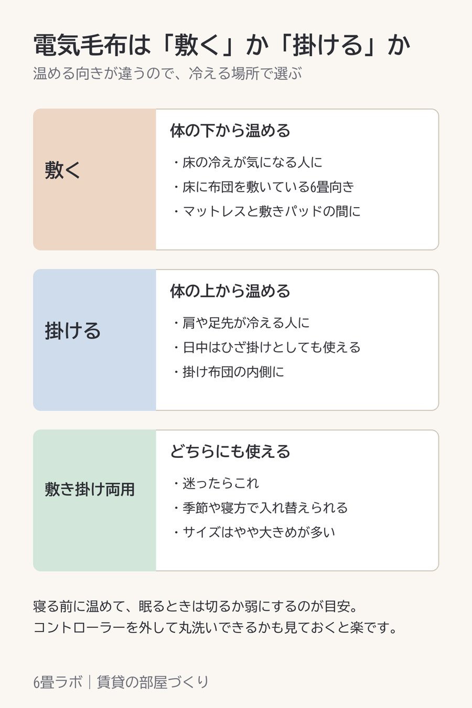

電気毛布は、敷くか掛けるかで選ぶ
この記事には楽天アフィリエイトのリンクが含まれています。

電気毛布って、敷くタイプと掛けるタイプがあるんですよね。
どちらがいいかは、どこが冷えるかで決まります。床からの冷えが気になるなら、体の下から温める敷くタイプ。肩や足先が冷えるなら、上から包む掛けるタイプです。
6畳でベッドを置かずに床に布団を敷いているなら、床の冷たさを直接受けるので、敷くタイプのほうが効きやすいと思います。迷ったら、どちらにも使える敷き掛け両用にしておくと、季節や寝方で入れ替えられます。
使い方の目安は、寝る前に温めておいて、眠るときは切るか弱にすること。それと、コントローラーを外して本体を丸洗いできるかどうかは、買う前に見ておくと後が楽です。